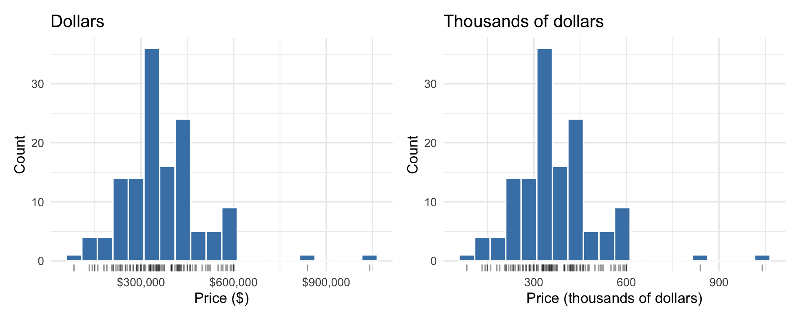
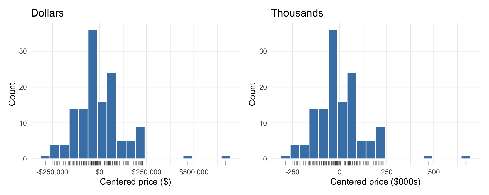
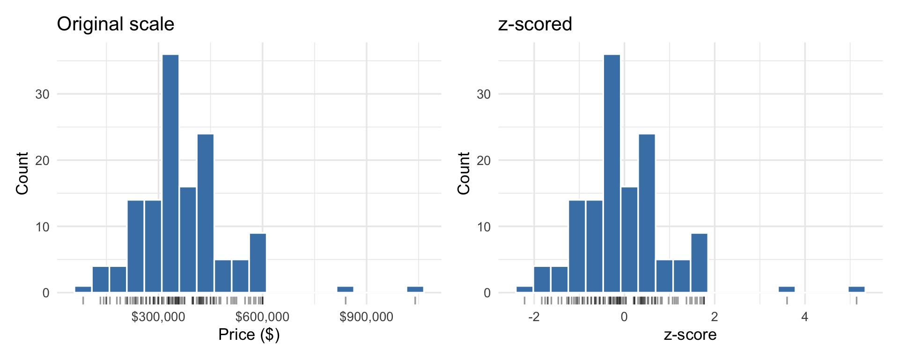
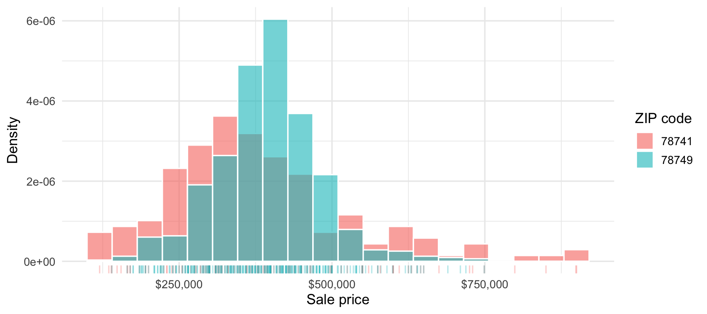
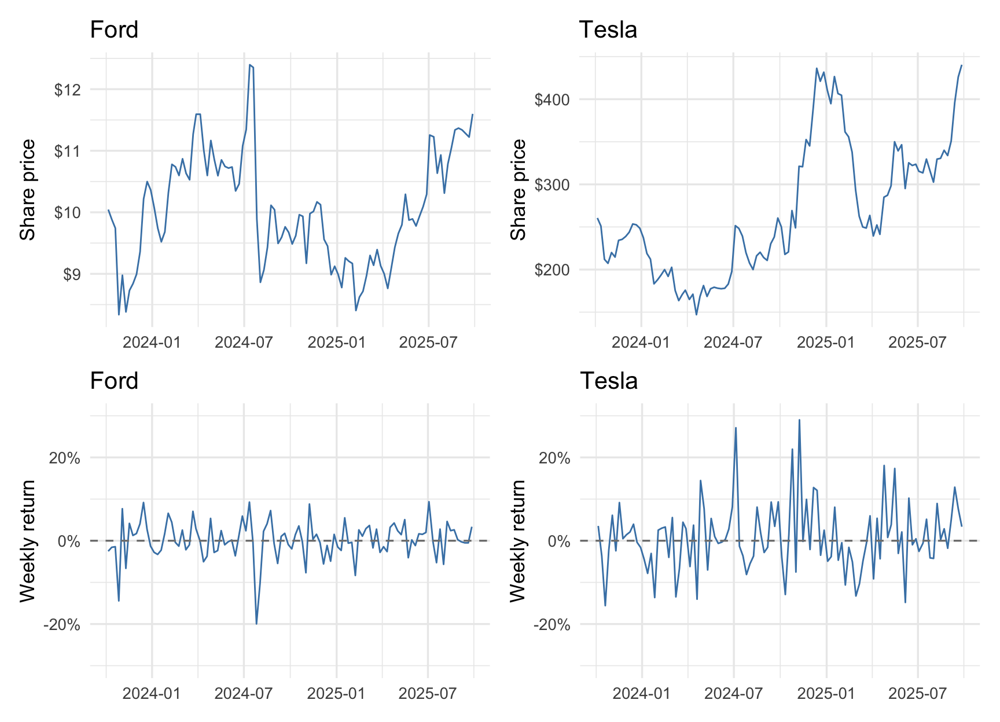
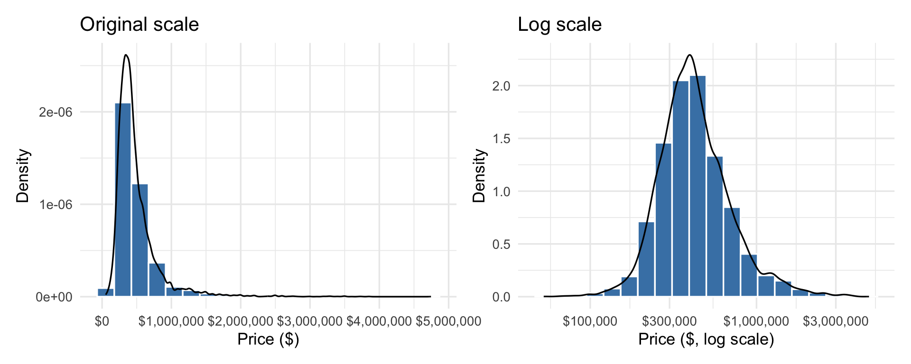
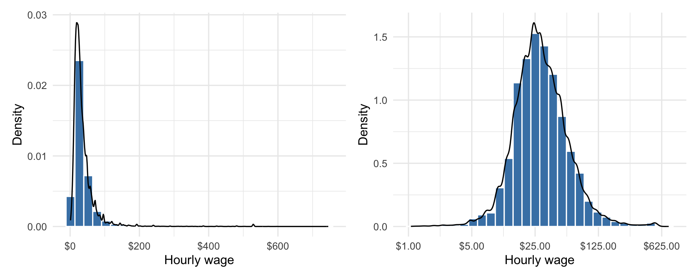

4 Transforming Quantitative Variables
Raw data do not always arrive in the form we want for an analysis or visualization. A transformation uses one or more existing values to produce a new variable with different properties. We will focus for now on three common transformations.
4.1 Linear transformations
Definition 4.1: Linear transformation
A linear transformation multiplies a variable by a constant, adds a constant, or does both: \(y = ax + b\). Every value gets the same rescaling and the same shift. We usually make one to change the units, the reference point, or both.
Suppose you divide every Austin sale price by 1,000 so that you can report prices in thousands of dollars rather than dollars. The distribution keeps exactly the same shape. You have only relabeled its horizontal axis.
We can also shift each price by subtracting a reference value such as the mean or median.

These changes again amount to relabeling the axis. After we subtract the mean and change the units, each value tells us how many thousands of dollars its sale price was above or below the average. The sign gives the direction.
NoteMean, median, and standard deviation of \(ax + b\)
If \(y_i = a x_i + b\) for every observation, where \(a\) and \(b\) are constants, then
\[ \bar{y} = a\,\bar{x} + b, \qquad \text{median}(y) = a\,\text{median}(x) + b, \]
\[ s_y = |a|\,s_x, \qquad s^2_y = a^2\,s^2_x. \]
Adding \(b\) shifts the center and leaves the spread alone; multiplying by \(a\) scales both the center and the spread (and the spread doesn’t care about the sign of \(a\)).
4.2 z-scores and standardization
Definition 4.2: z-score and standardization
A z-score measures how many standard deviations a value lies from the mean. A home that sold one standard deviation above the mean price has a z-score of 1, and a home that sold one standard deviation below has a z-score of \(-1\). It is computed as
\[ z = \frac{x - \bar{x}}{s}. \]
Taking the z-score of every observation produces a standardized variable, which has a mean of 0 and a standard deviation of 1. Standardization is a linear transformation:
\[ z = \frac{x - \bar{x}}{s} = \underbrace{\left(\frac{1}{s}\right)}_{a}\, x + \underbrace{\left(-\frac{\bar{x}}{s}\right)}_{b}, \]
so it leaves the shape of the distribution unchanged.

A z-score compares an observed difference, \(x_i - \bar x\), with the size of a typical difference, the standard deviation \(s\). It measures the difference relative to the variable’s spread. A $50,000 difference is five standard deviations when \(s=\$10,000\), but only half a standard deviation when \(s=\$100,000\).
As an example, consider home sale prices in ZIP codes 78749 and 78741. Figure 4.4 shows the distributions of prices in the two ZIP codes.

Suppose one home in each ZIP code sold for $600,000. Which sale lies farther above its local mean once we account for the different spreads? The mean sale price is $393,970 in 78749 and $379,545 in 78741. The lower mean in 78741 gives its $600,000 sale the larger raw difference. But prices also vary more in 78741. We can account for both facts by comparing the two z-scores.
For 78749, the z-score of the $600,000 sale is
\[ z = \frac{600,000 - 393,970}{85,141} \approx 2.42 \]
This value measures how many standard deviations $600,000 lies above the mean price in 78749. For 78741, we get
\[ z = \frac{600,000 - 379,545}{151,824}\approx 1.45 \]
On the standardized scale, then, $600,000 lies farther above the mean in 78749.
The histograms support the same comparison. The $600,000 mark lies deeper in the right tail for 78749 than for 78741.
4.3 Percent changes and returns
We often care more about a change relative to its baseline than about the raw change itself. A return on investment, for example, is the percentage change in value over a particular period. A $10,000 gain on a $100,000 investment is a 10% return, while the same gain on a $1,000,000 investment is only a 1% return.
We compute the relative change as
\[ r = \frac{\text{New value} - \text{Old value}}{\text{Old value}}. \]
In words, we divide the change in value by the old value. A value of \(r=0.10\) represents a 10% increase, while \(r=-0.10\) represents a 10% decrease. We will write returns as proportions and give their percentage equivalents when useful.
Turning a series of prices into returns changes more than the center or the units, so it is not a linear transformation. Like a z-score, however, a return lets us make apples-to-apples comparisons across settings. Ford and Tesla share prices and their dollar changes are not directly comparable, but the returns on a fixed investment in each company are.
Figure 4.5 shows two years of weekly observations for both stocks. The top row gives their prices, while the bottom row places their returns on a common scale.1

Rearranging the percent-change formula gives
\[ \text{New value} = \text{Old value} \times (1+r). \]
Applying a percentage change multiplies the old value rather than adding a fixed amount. Suppose your salary is $100,000 and you receive a 3% raise. Your new salary is $100,000 \(\times\) 1.03 = $103,000. Another 3% raise produces a salary of $103,000 \(\times\) 1.03 = $106,090. The second raise adds $90 more because it applies to a larger base. Repeated proportional changes compound in this way.
WarningCommon mistake: A 10% loss and a 10% gain do not cancel
A stock that falls from $100 to $90 and then rises by 10% ends at $99, down 1% overall. Equal percentage losses and gains apply to different starting values, so they do not offset. Log returns do add up: \(\log(90/100) + \log(99/90) = \log(99/100) \approx -0.0101\), the log return from $100 to $99.
4.4 Logarithms
Many quantities are easier to compare in proportional terms than in dollar terms. A 3% raise depends on the current salary, while a fixed $3,000 raise adds the same amount each year. Logarithms convert multiplication into addition: \(\log(ab)=\log(a)+\log(b)\). That identity lets us add changes that would otherwise compound through multiplication.
Logarithms are defined only for positive values. The plots below use base-10 logs, which make powers of 10 easy to label. The log returns later in this section use natural logs instead. The base changes the numerical units, but both scales turn equal ratios into equal distances.
House prices provide one example. Figure 4.6 compares sale prices on the original and log scales.

TipInterpretation: Equal distances on a log axis are equal ratios
On the original price axis, $1 million to $2 million covers the same distance as $2 million to $3 million, because each interval adds $1 million. On the log-scaled axis, $100,000 to $300,000 covers the same distance as $1 million to $3 million, because the upper value is three times the lower in both cases.
Hourly wages provide another example.

On the original scale, most wages cluster on the left while a thin tail stretches to the right. We saw the same shape for house prices. The log transformation does not remove that tail; it measures the gaps in multiplicative steps. The gap from $10 to $20 per hour is then the same as the gap from $50 to $100.
Data used in this section
The price series use split- and dividend-adjusted closing prices.↩︎